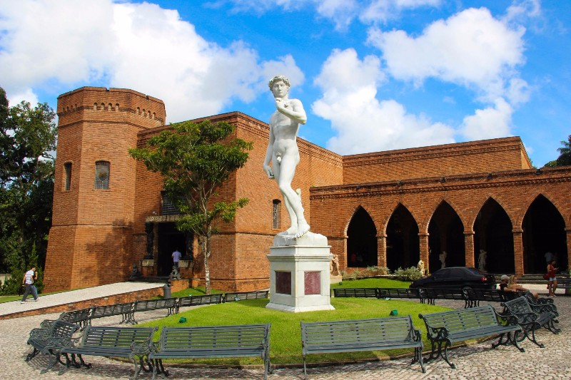

Instituto Ricardo Brennand

Sobre o Instituto
O Instituto Ricardo Brennand, localizado em Recife, Brasil, é um lugar verdadeiramente notável que combina arte, história e cultura. Com uma área deslumbrante e uma variedade de atrações, é um destino imperdível para os amantes da arte e da história.
Galeria
A galeria do instituto é o primeiro local que merece destaque. Neste espaço, os visitantes têm a oportunidade de explorar uma coleção incrível de partituras musicais e obras de artistas renomados, incluindo Johann Moritz Rugendas, Frans Post, Janete Costa e outros. É uma experiência inspiradora para quem aprecia a expressão artística em todas as suas formas.
Biblioteca
A biblioteca, o segundo espaço do instituto, é um verdadeiro tesouro para os amantes da literatura e da história. Lá, você pode encontrar manuscritos preciosos de Joaquim Nabuco, várias versões da Bíblia e uma vasta coleção de livros históricos que oferecem uma visão única do passado.
Museu de Armas
Para os entusiastas de história militar e armamentos, o terceiro local é o Museu de Armas, que abriga uma impressionante variedade de armas, desde peças da cutelaria medieval até alabardas e armas náuticas. Também é possível explorar uma coleção de armas de airsoft, proporcionando uma visão fascinante da evolução das armas ao longo dos séculos.
Restaurante Castelus
Após uma visita enriquecedora aos espaços culturais, os visitantes podem desfrutar de uma refeição memorável no Restaurante Castelus, parte do renomado grupo Spettus. Com uma culinária de alta qualidade e um ambiente acolhedor, é o lugar perfeito para relaxar e saborear a gastronomia local.
Capela de Nossa Senhora das Graças
A capela de Nossa Senhora das Graças, que se assemelha a um castelo gótico, é o quinto local a ser explorado. Situada em uma área ampla cercada por palmeiras e esculturas, cria um cenário verdadeiramente encantador que convida à contemplação.
Mapa
Em resumo, o Instituto Ricardo Brennand oferece uma jornada única que combina arte, história, cultura e gastronomia em um cenário deslumbrante. Seu horário de funcionamento é das 13h às 17h, com a última entrada permitida até as 16h30, de terça a domingo. Você pode encontrá-lo na Alameda Antônio Brennand, s/n, Várzea, Recife/PE, Brasil, CEP 50741-904. Este local é um tesouro cultural que merece ser explorado por todos que visitam a região.
Postagens recentes
Marco Zero

O Marco Zero se destaca como uma referência emblemática. Localizado no coração do Recife Antigo, este ponto simbólico é onde a cidade foi fundada em 1537 por Duarte Coelho Pereira.
Parque 13 de maio

O parque abriga esculturas e monumentos que contam a história da luta pela abolição, tornando-o um local educativo e inspirador.
Cine São Luiz

O Cinema São Luiz é mais do que apenas um local para assistir filmes; é um espaço onde a história do cinema encontra a contemporaneidade. Além de exibir filmes atuais e clássicos, o local também promove festivais de cinema e eventos culturais que enriquecem a vida artística da cidade.